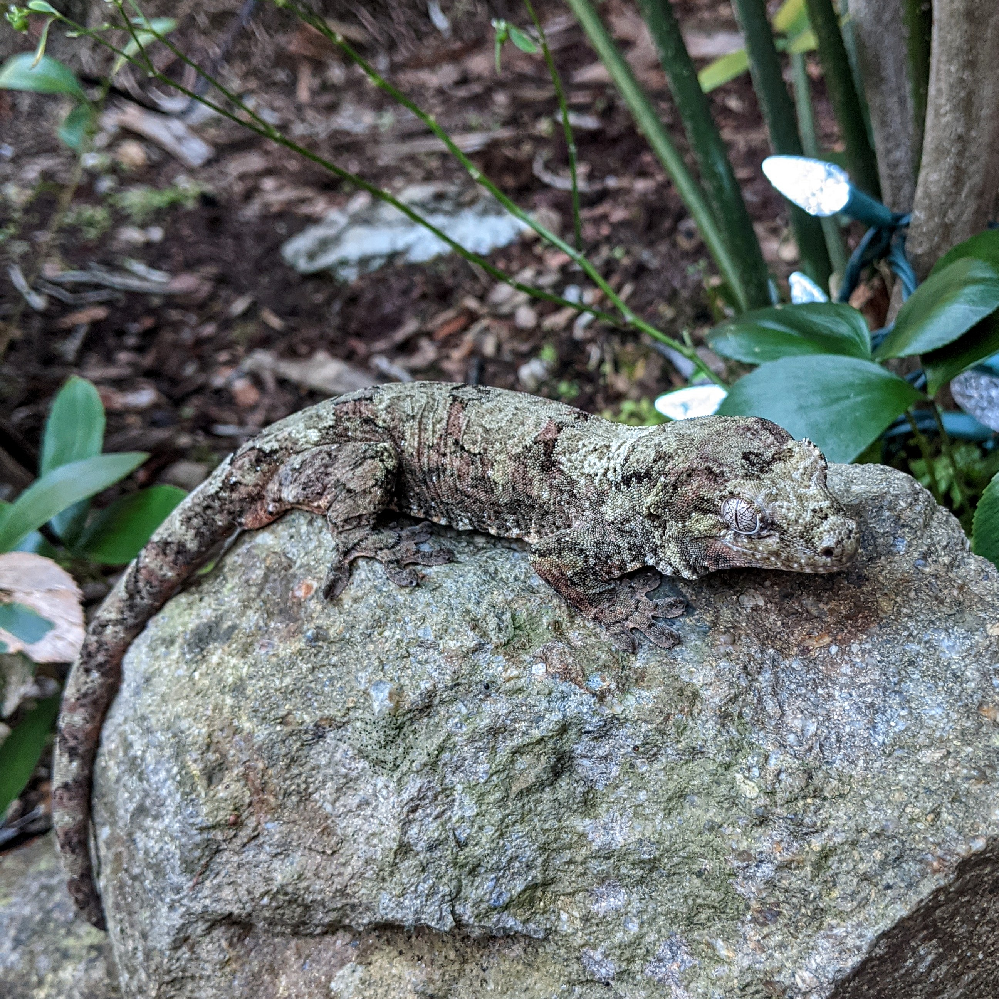

Chahoua Gecko
Mniarogekko chahoua

| Species | Difficulty Level | Size |
|---|---|---|
| Chahoua Gecko | Intermediate | 8-12 in |
| Crested Gecko | Beginner | 7-9 in |
| Gargoyle Gecko | Beginner | 7-10 in |
Natural Habitat
Chahoua geckos are native to two islands in New Caledonia. They are located on the Isle of Pines and the main island, Grande Terre. They inhabit humid forests and spend much of their time among the tree trunks, branches, and dense vegitation. Unlike other arboreal geckos, Chahouas are often found in the lower portions of the forest. Their green, brown, and gray colorations help them blend into the moss-covered bark.
Humidity and Water
The Chahoua needs a humid environment of approximately 60%-80% humidity with a drying off period, to avoid any possible health issues. Daily misting can be done to give the gecko water, but a water dish should be offered at all times, so that the gecko can stay properly hydrated.
Feeding Habits
Though the Chahoua is omnivorous and can eat decaying fruits it generaly prefers protein rich sources. The Chahoua is very food oriented and can be an aggressive eater. It will readily take crickets, dubias, and other feeder insects. A powered diet can also be offered as an additional food source.
Breeding
Chahouas females should only be bred when they are mature adults. They should be at least 2 to 3 years old as their eggs are typically harder, which means that females spend more energy and resources on producing healthy eggs. If the female does not have adequate nutrition she will have difficulty with breeding and will suffer.
If you would like a more detailed explanation on chahoua gecko care, or would like additional information on other reptiles please visit this More information